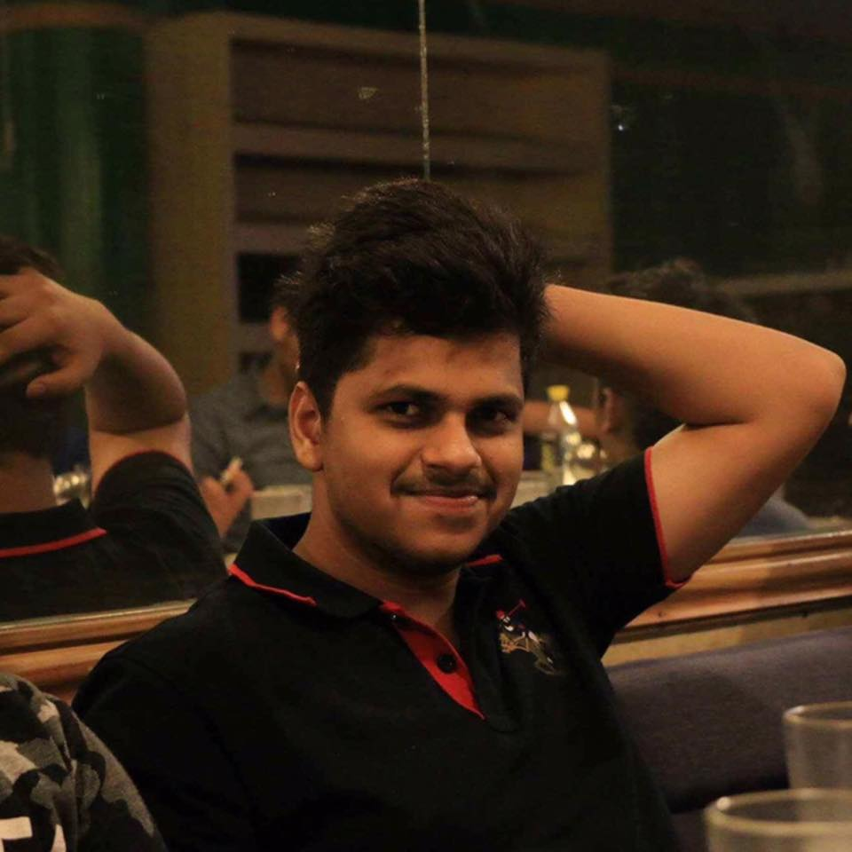

|  | HOME | ABOUT ME | INTERESTS | CONTACT | IMAGE GALLERY |
|
|
Cricket is my favourite game. I used to play cricket in front of my house in the park with my school friends and neighbours. I not only enjoy playing this game but also watching it. It is my favorite game. I like all the aspects of the game-batting, fielding and bowling (read more)
One of the interests which i grew while growing up was watching wrestling(WWE). I like the thrilling action which is displayed by the WWE superstars. My favourite WWE superstar is John Cena.
I have played many games but FIFA is the one i like the most. Apart from playing as a player or a team, we can also play as a manager in FIFA. Also, it's very graphically intense which makes the player feel like he is playing football for real. I also like the uncharted collection in which the protagonist 'Nathan Drake' experiences various thrilling adventures. Besides the GTA series is also quit good and I enjoy playing it a lot.
I’m a foodie because the perfect dish awakens a passion inside of me. The first smell of a long-loved favorite meal’s aroma induces hours’ worth of memories. A mind-blowing bite, chewed and swallowed in seconds, sparks minutes upon minutes of enthusiastic conversation and reflection.
Whenever I have free time, I don't miss a chance to watch television. Watching T.V. helps me to relax and refreshes my mind. Apart from tv series, movies and sports I also like to watch informative channels like Discovery Network, National Geography, Animal Planet etc.
Music is a very important thing in my life. Listening to music helps me to de-stress and relax. I believe music has the ability to convey all sorts of emotion. The musical images that music and song are able to create are amazing. Over time I've developed interest for electronic music which includes tracks of Martin Garrix, Avicci etc. The beats are very relaxing and they take one to a different world.